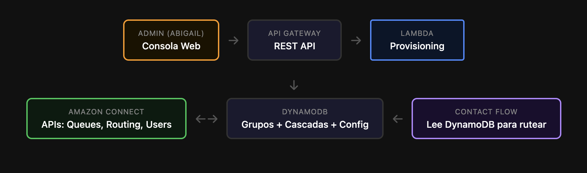

Estimación Fase III — Cascadeo & Campañas Outbound
GBM CC Fase II · Dimensionamiento de esfuerzo
17 Agosto 2026
Este documento dimensiona el esfuerzo de tres componentes que GBM quiere atender, para decidir qué se ejecuta ahora de forma provisional, qué pasa a Fase III y qué requiere aprobación de GBM. Son dos proyectos independientes: Cascadeo (llamadas entrantes, inbound) y Campañas (llamadas salientes, outbound). No dependen entre sí; cualquiera de los dos funciona sin el otro.
Resumen — Tres Componentes
Provisional · Ahora
Cascadeo Temporal
50h
Solución austera pero funcional. Ruteo provisional con Connect API, Lambda y Data Tables dentro de Connect. Resuelve la urgencia de Daniel.
Modalidad: Billable / Non-billable · Incluye requerimientos, UAT, pase a Stage y a producción
Fase III
Cascadeo Completo
200h
Versión con portal de administración visual y completa. Consola web donde GBM gestiona agentes, DynamoDB encriptado y seguridad completa.
Modalidad: Billable Fase III · Partner + SA
Fase III
Campañas Outbound
600h
Proyecto mayor de Fase III. Hoy es un proceso manual pero funciona; toma alrededor de 8 horas a la semana. Automatiza el armado de campañas.
Modalidad: Billable Fase III · Proyecto mayor
1 Cascadeo Temporal
Flujo de enrutamiento prioritario. El Contact Flow no se modifica al dar de alta o baja agentes; la configuración vive en las Data Tables de Connect.
| Actividad | Responsable | Horas |
|---|
| Sesión de requerimientos con GBM (grupos, prioridades, cascadas) | Jair / René | 20 |
| Planning (10%) | Jair | 2 |
| Desarrollo (Lambda + Data Tables + Connect API) | René | 8 |
| Testing / QA | René | 5 |
| Pase a Dev / Stage | Jair / René | 5 |
| Deploy y pruebas en producción | Jair / René | 5 |
| Buffer / holgura | — | 5 |
| Total | | 50 |
El desarrollo, testing, pases de ambiente (Stage y producción) y buffer se cubren con horas billable / non-billable ya disponibles (hay 80h). Por definir con GBM: confirmar si esto cambia el scope de la Fase II.
2 Cascadeo Completo
La versión de Fase III: administración visual y completa. Mismo motor de ruteo del temporal, más un portal de gestión.

| Componente | Responsable | Horas |
|---|
| Sesión de requerimientos con GBM | Jair / René | 20 |
| Planning | Jair | 20 |
| Motor de ruteo (verde + morado) — ya realizado en la fase provisional | René / Partner | 50 |
| Portal web de administración | Partner | 40 |
| DynamoDB + esquema del Partner + capa de encriptación | Partner | 25 |
| Permisos y hardening del portal | Partner / René | 15 |
| Integración Lambda ↔ portal ↔ Connect | René | 15 |
| QA | René / Partner | 8 |
| Deploy (Dev, Stage, producción) | René / Partner | 7 |
| Total | | 200 |
Requiere transición del SA saliente al nuevo SA asignado al proyecto. En caso de requerir apoyo adicional, se solicitaría el apoyo de Iván. El motor de ruteo es el mismo del temporal; lo que agrega valor es el portal visual para que GBM gestione sin intervención técnica.
3 Campañas Outbound
Proyecto mayor de Fase III. Solo dos piezas técnicas son complejas; el resto se apoya en capacidades nativas de Connect.
| Componente | Detalle | Horas |
|---|
| Sesión de requerimientos con GBM | Growth, Marketing, definición de audiencias | 60 |
| Planning | Arquitectura, backlog, definición técnica | 40 |
| API Entidad Cliente → Custom Profiles | Lambda que trae datos y los guarda en Customer Profiles | 80 |
| Portal carga de imágenes + plantillas | Botón cargar imagen, texto del mensaje, guardar en bucket S3, alta de templates | 120 |
| Segmentación (filtros + banderas GBM) | Connect Segments | 70 |
| Orquestación multicanal (WhatsApp, SMS, Voz) | Connect Outbound Campaigns por canal | 120 |
| Journey tracking / dashboard | Funnel envió → abrió → depositó (Pinpoint + UTM) | 80 |
| Portal autoservicio Growth/Marketing + seguridad | Área lanza campañas sin intermediario | 30 |
| Total | | 600 |
Alcance real: GBM seguirá creando audiencias, calendarizando campañas y analizando resultados. Lo que se automatiza es eliminar dos dolores: (1) descargar el Excel de forma manual, y (2) cargar las imágenes una por una. El resto — segmentar, medir y decidir — sigue siendo trabajo de marketing.
Aclaración Clave de estos Tres Proyectos
Existe la percepción de que la Fase III sería un proyecto de tamaño similar a la Fase II (3,400h). No lo es. Estos dos componentes juntos no pasan de 800h. Son técnicamente conocidos y ya validados en laboratorio: sabemos los componentes y cómo se conectan. La complejidad percibida es menor a la real.
Los Dos Planes a Presentar
| Plan | Qué es | Horas | Modalidad |
|---|
| Provisional | Cascadeo temporal para resolver la urgencia de Daniel | 50 | Billable / Non-billable |
| Fase III — Cascadeo | Portal de administración completo | 200 | Billable Fase III |
| Fase III — Campañas | Automatización outbound | 600 | Billable Fase III |
| Total Fase III | Cascadeo + Campañas | 800 | |